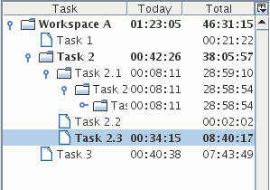

Task treeWith the task tree you can organize your activities in a hierarchy of tasks.
 The task tree hasn't any constraint, so you can organize it to best fit your needs, and change its management criteria whenever you want. Every tree element represents a task; so you can put some actions on it to say that you have dedicated some time to that task. When you click on a task element with the right mouse button you can rename, delete, add new subtasks to it or do some other available operations like cut, copy or paste. |